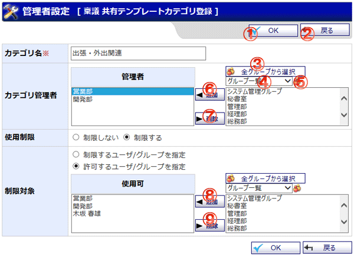

全ユーザで共有するテンプレートカテゴリを登録する画面です。

機能説明
OKボタン共有テンプレートカテゴリ編集確認画面へ遷移します。入力内容に不備がある場合エラーメッセージが表示されます。 |
戻るボタン遷移元の画面へ遷移します。 |
全グループから選択ボタンポップアップで全グループから選択画面が開きます。 |
グループコンボ選択したグループに所属するユーザがユーザリストに表示されます（既に承認経路リスト・最終確認リストに追加されているユーザは表示されません）。 |
グループボタンポップアップでグループ選択画面が開きます。 |
追加ボタンユーザリストで選択されているユーザを経路リストへ追加します。 |
削除ボタン承認経路リストで選択されているユーザを経路リストから除外します。 |
使用ユーザ追加ボタングループ、ユーザリストで選択したグループまたはユーザを使用ユーザリストへ追加します。 |
使用ユーザ削除ボタンボタン使用ユーザリストで選択したグループまたはユーザを使用ユーザリストから除外します。 |
表示・入力項目説明
カテゴリ名
カテゴリ名を入力します（20文字以内）。
使用制限
カテゴリの使用を制限するか選択します。制限する場合は、制限対象を選択する必要があります。
制限対象
使用制限を行う場合に表示します。カテゴリの使用を許可するユーザ、または許可しないユーザを選択します。